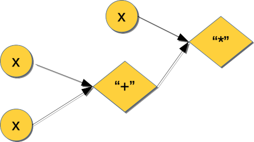

I mentioned Julia’s fondness for multiple dispatch in my first typing tutorial. On purpose at the time, my case study was limited to the simplest case: single dispatch. I’ve waited until I ran across an example of a “natural”" problem where multiple dispatch would play an important role. I think I’ve found one: differentiating a function with no closed-form formula.
Preview
- Play with a custom number-like type.
- Simplify implementation by leveraging Julia’s support for type promotions.
- Review (very quickly) one technique for automated differentiation (AD).
- Implement Forward AD through operator overloading. Test it in several ways, finish by plugging it into a Newton-Raphson solver.
Differentiate this
To set my overall objective, I would like to be able to compute the derivative of the following function:
function myerf(x ::Number)
Σ = 0.0
x² = x * x
for k in 0 : 20 # hardcoding the number of summation terms for simplicity
Σ += x / (factorial(k) * (2k + 1))
x *= -x²
end
return 2.0 / √π * Σ
endThis just sums a truncated Taylor series for erf(x): \[ \text{erf}(x) = \frac{2}{\sqrt{\pi}} \int_{-\infty}^{x}e^{-t^2}dt = \frac{2}{\sqrt{\pi}} \sum_{k=0}^{\infty} \frac{(-1)^k x^{2k+1}}{k! (2k+1)} \] This series is straightforward to derive by integrating the one for \(e^{-x^2}\). That fact will also allow me to easily check my derivative function, when I get one, against the known correct answer1: \[ \frac{\partial}{\partial x} \text{erf}(x) = \frac{2}{\sqrt{\pi}} e^{-x^2} \] My sum-of-the-series implementation seems correct2:
# if you haven't installed SpecialFunctions yet:
# pkg> add SpecialFunctions
julia>using SpecialFunctions # for the "official" erf(x)
julia> myerf(0.7), erf(0.7)
(0.6778011938374184, 0.6778011938374184)So, I know the closed-form expression for the derivative of myerf(x) and somehow I need to get the computer to get it, too, but without actually entering the closed-form answer. And, by the way, I would like a solution that’s as exact as possible, something not based on finite differences.
Baby Julia steps: operators, functions, and methods
To understand the AD example that’s coming up, it will be helpful to delve a little bit into Julia’s model of function dispatch and evaluation. It may seem like an unnecessarily long detour but I promise it will all come together and the learnings will be general.
For the following one-line function definition
julia> g(x) = x * (x + x)
g (generic function with 1 method)consider how the inputs (of which \(g\) has only one, \(x\)) determine its eventual value3: we sum two copies of \(x\), then multiply that intermediate result by another \(x\). You could say that all these values, both the inputs and the intermediates, propagate through \(g\)’s calculation graph:

Each function call node in such a graph is an elementary step of the calculation. In fact, I can drill into these steps directly from Julia:
julia> g_tree = :(x * (x + x)) # ':(...)' is the "quoting" operator here: it parses what's inside into a syntax tree
:(x * (x + x))
julia> typeof(g_tree)
Expr
julia> dump(g_tree) # show g_tree as a tree of annotated nodes
Expr
head: Symbol call
args: Array{Any}((3,))
1: Symbol *
2: Symbol x
3: Expr
head: Symbol call
args: Array{Any}((3,))
1: Symbol +
2: Symbol x
3: Symbol xWhat dump() shows is a tree of expression (Expr) nodes comprising the calculation graph for \(g(x)\). Each node annotated with Symbol call is an invocation of one elementary step like multiplication (*), addition (+), and so on – those were the diamond-shaped nodes in the picture. (If you have some CS background or ever worked on an interpreter or compiler, this ground should feel very familiar.)
Julia operators are functions
As already implied by the syntax tree form of \(g(x)\), almost4 all elementary operators like *, +, etc are actually Julia functions with special infix syntax. They are defined as such and can be invoked with the “normal” function call syntax:
julia> x = 2;
julia> x + x
4
julia> +(x, x) # call function named "+" with parameter tuple "(x, x)"
4(In fact, most of Julia is defined via its own syntax, something the language designers and user community are justifiably proud of.)
Julia functions are “overloadable” (or is it “overridable”? 😄)
Multiplying two integers is not the same as “multiplying” two strings5:
julia> x * x
4
julia> "x" * "x"
"xx"and might be different from “multiplying” objects of a user-defined type. As I started to explain in my previous typing tutorial, this is made possible by using different parameter types for different function versions (“methods”, in Julia parlance). Internally, Julia keeps a list of all methods it is aware of for each operator/function and they can be examined using methods():
julia> methods(*)
# 358 methods for generic function "*":
[1] *(x::Bool, z::Complex{Bool}) in Base at complex.jl:282
[2] *(x::Bool, y::Bool) in Base at bool.jl:98
[3] *(x::Bool, y::T) where T<:AbstractFloat in Base at bool.jl:110
[4] *(x::Bool, z::Complex) in Base at complex.jl:289
[5] *(x::Bool, y::AbstractIrrational) in Base at irrationals.jl:139
[6] *(a::Float16, b::Float16) in Base at float.jl:392
[7] *(x::Float32, y::Float32) in Base at float.jl:398
[8] *(x::Float64, y::Float64) in Base at float.jl:399
[9] *(z::Complex{Bool}, x::Bool) in Base at complex.jl:283
... lots more ...It is possible for a user to add more methods to such lists. Each row has a unique signature. Imagine defining your own “numbers”:
julia> struct MyNum <: Number
v ::Float64
end
julia> MyNum(2.0) * MyNum(2.0) # this won't work
ERROR: MethodError: no method matching *(::MyNum, ::MyNum)
Closest candidates are:
*(::Any, ::Any, ::Any, ::Any...) at operators.jl:529
julia> Base.:(*)(lhs ::MyNum, rhs ::MyNum) = MyNum(lhs.v * rhs.v) # define 'MyNum * MyNum', so now it will
julia> MyNum(2.0) * MyNum(2.0)
MyNum(4.0)
julia> methods(MyNum)
# 2 methods for generic function "(::Type)":
[1] MyNum(v::Float64) in Main at none:1
[2] MyNum(v) in Main at none:1
julia> methods(*)
# 359 methods for generic function "*": # <- note that count is up by one
[1] *(x::Bool, z::Complex{Bool}) in Base at complex.jl:282
...
[31] *(lhs::MyNum, rhs::MyNum) in Main at none:1
...Note again how the new method doesn’t “belong” to MyNum but rather to a global method table associated with *.
Continuing, I would need to define a minimal collection of arithmetic operations in order for `MyNum’s to be useful as something resembling numbers:
# binary ops:
Base.:(+)(lhs ::MyNum, rhs ::MyNum) = MyNum(lhs.v + rhs.v)
Base.:(-)(lhs ::MyNum, rhs ::MyNum) = MyNum(lhs.v - rhs.v)
Base.:(*)(lhs ::MyNum, rhs ::MyNum) = MyNum(lhs.v * rhs.v)
Base.:(/)(lhs ::MyNum, rhs ::MyNum) = MyNum(lhs.v / rhs.v)
# unary ops:
Base.:(+)(x ::MyNum) = x
Base.:(-)(x ::MyNum) = MyNum(- x.v)julia> MyNum(3.0) + MyNum(4.0)
MyNum(7.0)So far, so good. Note that \(g(x)\) is generic enough so it “just works” for both plain floats and MyNums:
julia> g(2.0)
8.0
julia> g(MyNum(2.0))
MyNum(8.0)Take note, this will happen again later. Of course, \(g(x)\) is downright trivial: it uses only * and + – this was truly a baby step.
Something is missing
My custom, soon-to-win-many-awards, number type is missing some boilerplate stuff. Trying another simple function fails; it flat out refuses to work with MyNums:
julia> f(x) = 1.0 / x
f (generic function with 1 method)
julia> f(MyNum(2.0))
ERROR: promotion of types Float64 and MyNum failed to change any arguments
Stacktrace:
[1] sametype_error(::Tuple{Float64,MyNum}) at ./promotion.jl:308
[2] not_sametype(::Tuple{Float64,MyNum}, ::Tuple{Float64,MyNum}) at ./promotion.jl:302
[3] promote at ./promotion.jl:285 [inlined]
[4] /(::Float64, ::MyNum) at ./promotion.jl:316
[5] f(::MyNum) at ./none:1I can see from the stacktrace that \(f(x)\) was indeed found and started, but something went wrong later: there was no suitable defition of / for parameter type pair (Float64, MyNum). Julia does not know to convert the 1.0 in 1.0 / x to a MyNum – the language does not have what’s called automatic promotion. As a result, MyNums don’t interoperate with the “stock” numbers particularly well.
Promotion fix #1: MOAR dispatch!
One way to proceed is to keep adding to the method table for / (and other ops) until all conceivable cases are covered:
julia> Base.:(/)(lhs ::Float64, rhs ::MyNum) = MyNum(lhs / rhs.v) # float / MyNum
julia> f(MyNum(2.0)) # f() works now
MyNum(0.5)
julia> h(x) = x / 3.0
h (generic function with 1 method)
julia> h(MyNum(2.0))
ERROR: promotion of types MyNum and Float64 failed to change any arguments
...
julia> Base.:(/)(lhs ::MyNum, rhs ::Float64) = MyNum(lhs.v / rhs) # MyNum / float
julia> h(MyNum(2.0)) # h() works now, too
MyNum(0.6666666666666666)In other words, all possible permutations of parameter types need to be implemented by all operators. This game of whack-a-mole seems laborious and error-prone. Hmm, is it possible to have too much dispatch? 😄
Again, the “multiple” in Julia method dispatch is apparent if you review all variants of MyNum division so far:
Base.:(/)(lhs ::MyNum, rhs ::MyNum) = MyNum(lhs.v / rhs.v)
Base.:(/)(lhs ::Float64, rhs ::MyNum) = MyNum(lhs / rhs.v)
Base.:(/)(lhs ::MyNum, rhs ::Float64) = MyNum(lhs.v / rhs)There is complete symmetry between the left-hand side (lhs) and the right-hand side (rhs) arguments: neither one has “ownership” of /. However, to make all these different overloads co-exist and do slightly different things it is necessary to dispatch on the runtime type of both arguments.
This design choice begs for some automatic code generation and indeed I think it can be made viable through Julia’s metaprogramming facilities, specifically macros. But because I haven’t covered metaprogramming yet, I will instead go another, easier for the time being, route.
Promotion fix #2: promote_rule()
Julia has provisions for dealing with the explosion in the number of needed permutations of argument types. The idea is as follows: instead of expecting for there to be an op(T1, T2) method for every possible (T1, T2) pair, a collection of “promotion rules” is queried to find out whether T1 and T2 can be first converted to a common type T (which could be, but doesn’t have to be, either T1 or T2). If that is possible, it is assumed that the conversion is lossless and subsequently only the op(T, T) overload will be needed.
It is easy to see how this system reduces the need for very large method tables. In the case of MyNum, the correct incantation is:
Base.promote_rule(::Type{MyNum}, ::Type{<: Number}) = MyNumwhich specifies that whenever a mix of MyNum and subtype-of-Number is encountered, the common type T to use is MyNum. This is less “automatic”, but it works. This way Julia supports type promotions that in other languages like C++ and Java are done by the compiler (and hence are fairly fixed).
So now a much more compact and yet robust arithmetic system for a custom number type can be implemented with two types of building blocks:
- actual arithmetic/math operators and functions, defined to take only the custom number arguments;
- if needed, promotion rules to make the custom types interoperate with the “stock” types.
This is the design I use below as part of my demo AD implementation. You can read the handful of lines needed to have custom arithmetic operations in the supporting module file.
Whew! 😰 It took a bit longer than I thought, but the language mechanics have been explained and I can return to my original objective: fun with differentiating stuff in Julia.
Case study: automatic differentiation via “forward prop”
What I need now is some Automatic Differentiation (AD). There are many AD flavors but I will exlore just one simple variant called “forward” (also “tangent” or “standard”) AD. Forward AD is particularly easy to engineer in a language that offers operator overloading, which we now understand Julia does. (By the way, if you search the web chances are you will run into tutorials that introduce Forward AD via dual numbers – I do not do that here because I don’t think it is particularly intuition-inducing.)
You may have noted that myerf(x) was coded in a profoundly “non-functional” style: it has evil procedural things like variable mutation in a for-loop. Nevertheless, AD can work with it6 and I believe that to be a simple example of differentiable programming.
- A calculation is a composition of smaller steps
- These steps can be instrumented to generate “stuff” in addition to the original expression values.
Core AD idea #1: composition of steps
If you’ve made it through the preceeding sections, the following should now be seared into your subconscious: a function computes its output by forward-propagating inputs and intermediate expression values through its calculation graph. These elementary steps are +, *, cos, sin, etc.
Futhermore, these steps are not very “intrinsic” or somehow untouchable: I’ve shown that I could wrap values into a custom type and overload all the operations I am interested in. This works beacuse of Julia’s core paradigm of (multiple) dispatch on argument types.
Core AD idea #2: step instrumentation
Just one more step remaining. Why did I bother replicating standard arithmetic with MyNum? Sure, it was to understand better how some aspects of Julia worked. But note this: computing the derivative of a function is also a composable calculation and it can be done in parallel with computing the function value.
So… if I extend MyNum with another field to hold the current expression’s derivative, I can forward-propagate it in the same pass as the main" value:
struct Context <: Number
v ::Number
∂ ::Number
end# binary ops:
Base.:(+)(lhs ::Context, rhs ::Context) = Context(lhs.v + rhs.v, lhs.∂ + rhs.∂)
Base.:(-)(lhs ::Context, rhs ::Context) = Context(lhs.v - rhs.v, lhs.∂ - rhs.∂)
Base.:(*)(lhs ::Context, rhs ::Context) = Context(lhs.v * rhs.v, lhs.v * rhs.∂ + lhs.∂ * rhs.v)
Base.:(/)(lhs ::Context, rhs ::Context) = Context(lhs.v / rhs.v, (lhs.∂ * rhs.v - lhs.v * rhs.∂) / rhs.v^2)
# unary ops:
Base.:(+)(x ::Context) = x
Base.:(-)(x ::Context) = Context(- x.v, - x.∂)Here Context is the grown-up version of MyNum. It has been extended with field \(\partial\). The arithmetic overloads for Context continue to propagate expression values in \(v\) while some new logic propagates derivative values in \(\partial\).
Individual Context \(v\)-rules are composed to form a larger calculation such as myerf(x). Consistently with such pattern of composition, each \(\partial\)-rule can be seen to be an application of the chain rule for obtaining derivatives of the composition of functions. For example, since
\[
\frac{\partial}{\partial x} (lhs + rhs)(x) = \frac{\partial}{\partial x} lhs(x) + \frac{\partial}{\partial x} rhs(x)
\]
the Context rule for + must be
\[
+\big( \langle lhs.v, lhs.\partial \rangle, \langle rhs.v, rhs.\partial \rangle \big) = \big\langle lhs.v + rhs.v, lhs.\partial + rhs.\partial \big\rangle.
\]
The rule for sin, should it be needed, would be
\[
\sin \big(\langle x.v, x.\partial \rangle \big) = \big\langle \sin(x.v), \cos(x.v) \partial \big\rangle,
\]
and so on.
What Context value should be fed as the initial input? Its \(v\)-field is x. The derivative of that with respect to x is 1.0, so to establish derivative propagation correctly it needs to be seeded with Context(x, 1.0).
And that’s pretty much it. Does it work? Let’s give it a try:
function derivative(f ::Function)
return x ::Number -> f(Context(x, 1.0)).∂ # discard value, return derivative
end
∂ = derivative # add a nice-looking aliasAnd the moment of truth:
julia> include("multiple_dispatch/FAD.jl")
Main.FAD
julia> using Main.FAD # bring ∂, etc into this REPL
julia> x = 0.7;
julia> ∂(myerf)(x), 2/√π * exp(-x^2)
(0.6912748604105389, 0.6912748604105386)Success!
Observe something neat: myerf(x) hasn’t stopped working for plain float x’s – it is still generic. Invoked with a scalar float x, it will return just the erf(x) value and spend no CPU cycles computing anything else. Invoked with a Context, it will return both erf(x) and its derivative at x. Of course, two different bits of native assembly execute in these two cases. Both versions (that is, methods of a function named “myerf”) will be JIT’ed separately.
myerf(Context) is in fact a version of myerf(x) instrumented to carry out additional calculations and carry additional, well, context through the calculation graph that defines myerf(x).
As a different test, the chain rule \(\frac{\partial}{\partial x}(f \circ g)(x) = \frac{\partial}{\partial g} f(g(x)) \frac{\partial}{\partial x} g(x)\) should also hold for arbitrary “differentiable” Julia functions:
julia> f(x) = 1.0 / x
f (generic function with 1 method)
julia> g(x) = x * (x + x)
g (generic function with 1 method)
julia> x = 1.2345;
julia> ∂(f ∘ g)(x), ∂(f)(g(x)) * ∂(g)(x)
(-0.5315286974115385, -0.5315286974115385)I think this is downright beautiful.
And last but not least, let me try an algorithm that can benefit from having both \(f(x)\) and \(\frac{\partial}{\partial x}f(x)\) available at the same time, e.g. Newton-Raphons root finder. Here is a prototype version performing \(x_{n+1} = x_n - \frac{f(x_n)}{\frac{\partial}{\partial x}f(x_n)}\) iterations until convergence within given tolerance:
function root_solve(f ::Function, x₀ ::Number; ϵ = 1e-8)
i = 1
while true
ctx = f(Context(x₀, 1.0))
println("[$i]: f($x₀)\t= $(ctx.v)")
abs(ctx.v) < ϵ && break
x₀ -= ctx.v / ctx.∂ # use both value and derivative
i += 1
end
return x₀
endIf I extend my Context “algebra” with some more elementary operations
Base.sin(d ::Context) = Context(sin(d.v), cos(d.v) * d.∂)
Base.cos(d ::Context) = Context(cos(d.v), - sin(d.v) * d.∂)then I can try solving, say, trigonometric equations:
julia> root_solve(x -> sin(x) - cos(x), 0.0) # find a root of sin(x) = cos(x) starting from x₀ = 0
[1]: f(0.0) = -1.0
[2]: f(1.0) = 0.30116867893975674
[3]: f(0.782041901539138) = -0.004746462127804163
[4]: f(0.7853981759997019) = 1.7822277875723103e-8
[5]: f(0.7853981633974483) = -1.1102230246251565e-16
0.7853981633974483
julia> π/4
0.7853981633974483Nice. I find this all very satisfying. Especially given how few lines of Julia actually went into the final implementation.
For an industrial-strength implementation of this approach to AD, check out ForwardDiff.jl.
Summary
- Almost all Julia operators are actually functions. Working in Julia often means being function-oriented.
- It is possible to intercept Julia functions with custom types and methods. As an example, this approach is one easy way to implement forward mode of automatic differentiation essentially from scratch.
- Being able to route execution to the right method based on the runtime types of all function arguments is multiple dispatch. Such routing is exponentially more expressive that single dispatch typical of the “classic” OOP.
- Sometimes multiple dispatch can get a little out of hand due to proliferation of methods that differ only in small details. Julia has some support for typical tasks like common type conversions and promotions needed for practical implementions of arithmetic operations over custom types.
I am abusing the partial derivative symbol \(\partial\) for all my derivative notation here, including Julia code.↩
My implementation ignores possible overflows in x², factorial(k), etc – it is intentionally made to evoke the symbolic series expression. A.k.a. “research code”.😄 ↩
The compiler may choose to optimize this subexpression to \(2x\) but that doesn’t invalidate the forgoing.↩
There are exceptions like
&&and||because those obey short-circuit evaluation rules.↩Yes, Julia uses
*for string concatenation. A little unorthodox?↩Although in general AD isn’t guaranteed to work with all such functions.↩